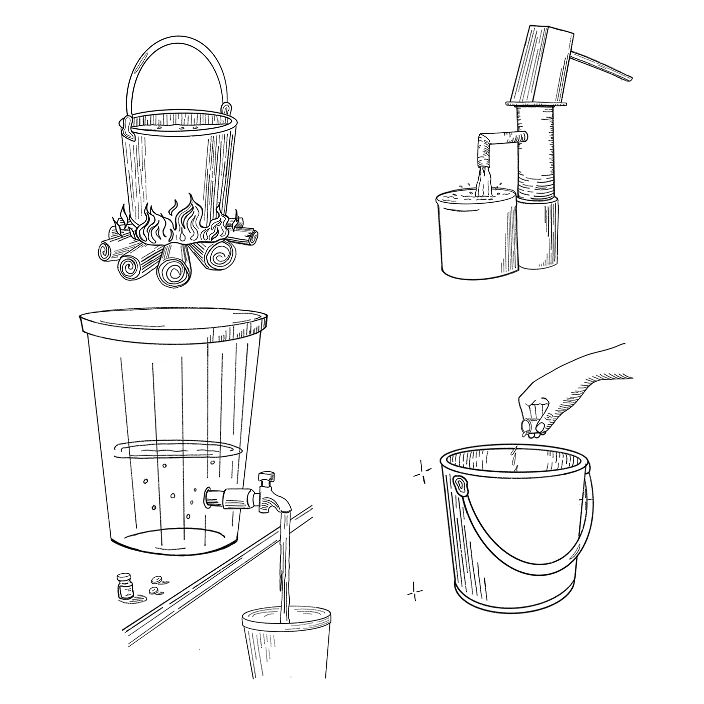

Hay diferentes tipos de productos químicos que se utilizan para hacer que el agua sea segura para beber. Las personas que utilizan productos químicos para purificar el agua deben recibir capacitación en las instrucciones específicas sobre cómo preparar agua segura con el producto químico que utilizan.